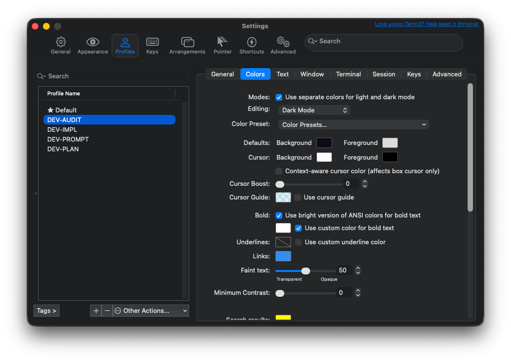
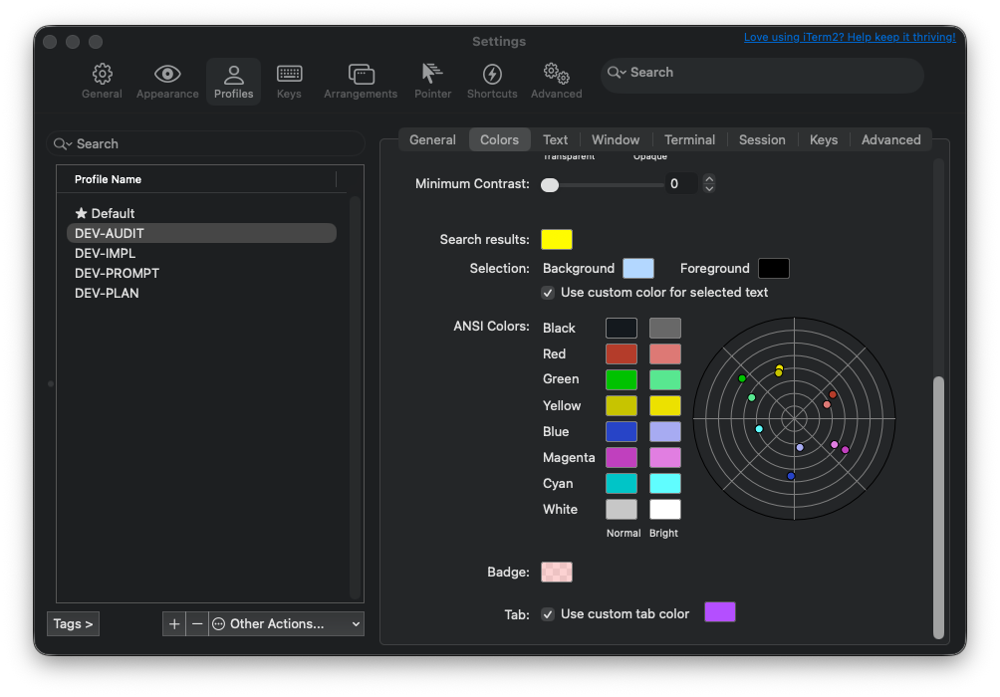
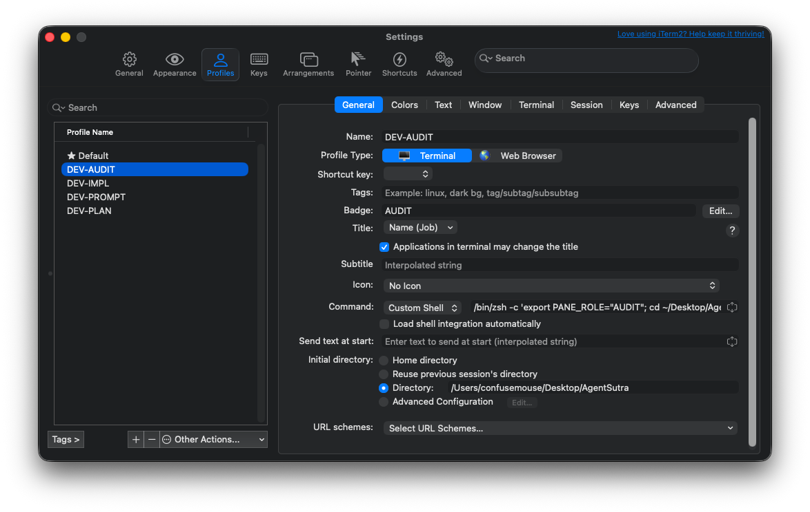
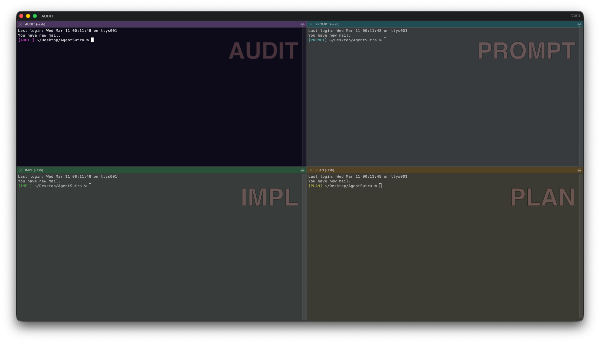
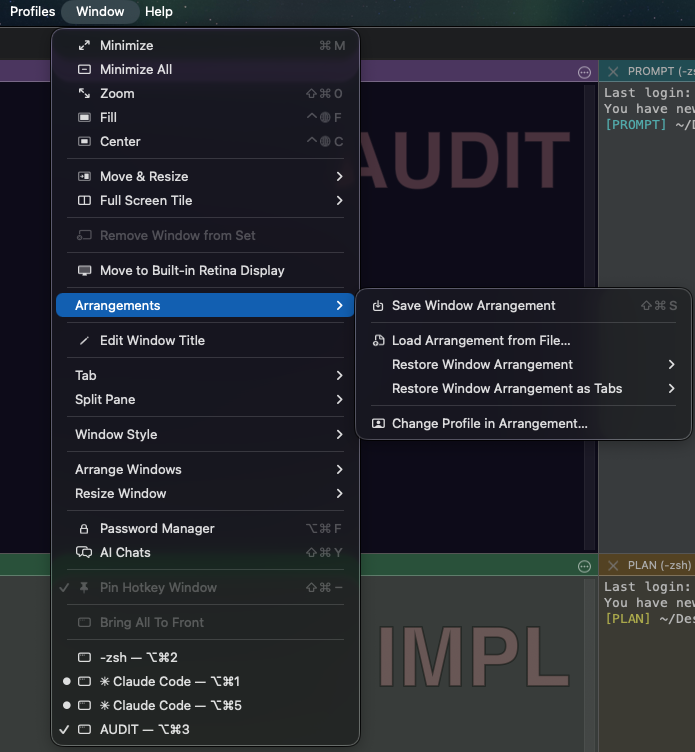
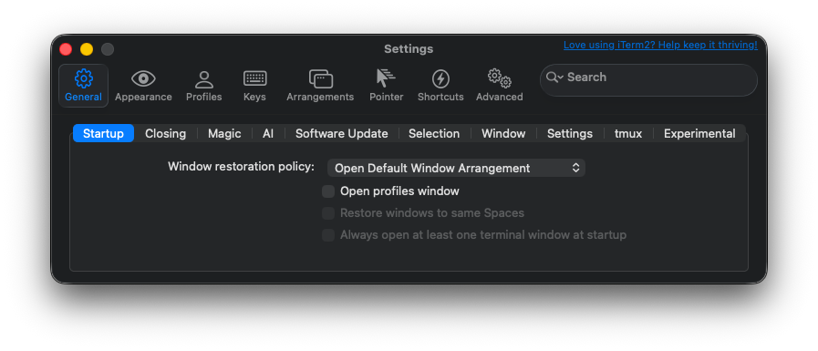
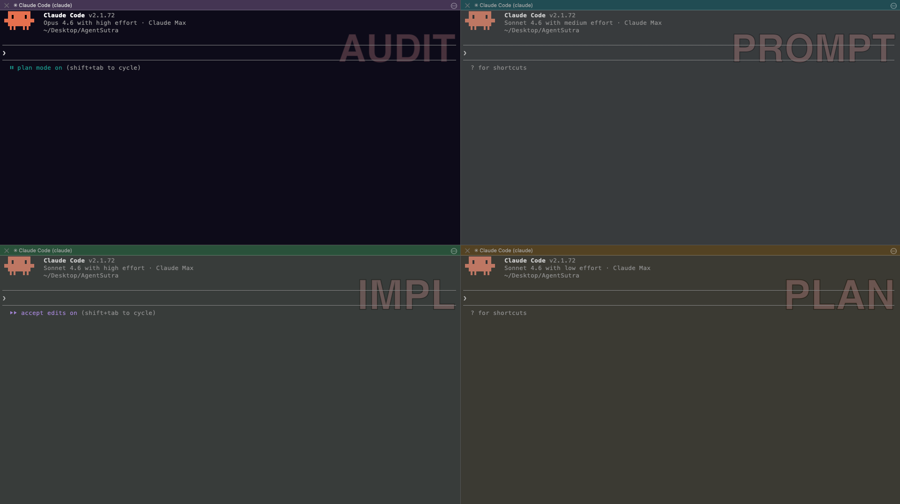

A step-by-step guide to set up role-based panes — one for code, one for review, one for planning, one for prompts. Each with the right model, effort level, and permissions.
Each pane runs a separate Claude Code session with a dedicated role. The AUDIT pane uses Opus for deep review. Everything else uses Sonnet to keep costs down. A cc alias launches the right configuration automatically.
This workflow relies on features the default Terminal doesn't have:
| Feature | macOS Terminal | iTerm2 |
|---|---|---|
| Split panes | Tabs/windows only — no side-by-side splits | Unlimited independent panes in a single tab |
| Named profiles | Basic profiles, no $ITERM_PROFILE env var | Auto-sets $ITERM_PROFILE per pane — the key to role detection |
| Visual identity | Basic themes and transparency | Per-profile backgrounds, tab colours, badges, and 24-bit colour |
| Window arrangements | No saved layouts | Save & auto-restore multi-pane layouts on launch |
| Productivity | Standard find and copy | Paste history, Instant Replay, triggers, shell integration |
The $ITERM_PROFILE environment variable is especially critical — it's what lets the cc alias automatically launch the right model and permissions per pane, and it survives window arrangement restores.
Create 4 named profiles, each with a distinct background tint, tab colour, and badge so you can instantly tell which pane you're in.
Open iTerm2 → Settings → Profiles (⌘,). Click the + button four times. Double-click each "New Profile" name to rename it:
| Profile Name | Background | Tab Colour | Role |
|---|---|---|---|
| DEV-AUDIT | #0d0b18 | #a855f7 | Code review |
| DEV-IMPL | #080f0b | #22c55e | Implementation |
| DEV-PROMPT | #080e10 | #06b6d4 | Prompt engineering |
| DEV-PLAN | #0d0b00 | #f59e0b | Architecture & planning |

For each profile, click the Colors sub-tab:

Click the General sub-tab for each profile:
Then click the Text sub-tab and set font to JetBrains Mono 13pt (or Menlo 13pt).

Each profile needs a startup command (to cd into the project directory and open an interactive shell) and an initial directory setting (as a fallback for window arrangement restores).
In each profile → General sub-tab → change the Command dropdown from "Login Shell" to "Custom Shell" and paste the corresponding command:
Replace your-project with your actual project directory name.
exec zsh at the end? It replaces the subshell with an interactive zsh session. Without it, the pane would close the moment you exit Claude Code or any other command.Still in the General sub-tab, find Initial directory below the Command field. Change from "Home directory" to "Directory:" and enter the full path:
Add a block to your ~/.zshrc that auto-detects which profile you're in and configures coloured prompts, locked tab titles, and a cc alias to launch Claude Code with the right flags.
Open your shell config file and paste this block at the very bottom:
Then run source ~/.zshrc in each pane to apply.
Create a 2×2 pane layout, save it, and configure iTerm2 to restore it automatically on launch.



Type cc in any pane. The alias you set up in Step 4 launches Claude Code with the correct model, effort level, and permissions for that pane.
| Pane | cc expands to | What you see |
|---|---|---|
| AUDIT | claude --model opus --effort high --permission-mode plan | Opus · plan mode on |
| IMPL | claude --model sonnet --effort high --permission-mode acceptEdits | Sonnet · accept edits on |
| PROMPT | claude --model sonnet --effort medium | Sonnet · medium effort |
| PLAN | claude --model sonnet --effort low | Sonnet · low effort |

| Flag | Purpose |
|---|---|
| --model opus|sonnet|haiku | Model selection (or full IDs like claude-opus-4-6) |
| --effort low|medium|high|max | How much thinking effort Claude uses |
| --permission-mode plan | Read-only — Claude cannot write files |
| --permission-mode acceptEdits | Auto-accept file edits without prompting |
| --append-system-prompt "..." | Add custom instructions on top of defaults |
| --continue | Resume most recent conversation in this directory |
| --resume | Resume a specific session by ID |
iTerm2 navigation
Claude Code (inside a session)
Every code change follows this pattern across panes:
When AUDIT finds an issue, copy its output and paste into IMPL:
This setup is project-agnostic. To use it with a different codebase:
Use a project-specific prefix: SS-AUDIT, SS-IMPL, etc. for a project called SensiSpend. Or keep DEV-* and just change the directory.
Point to the new project path in each profile's General tab.
Add matching entries in both case blocks for the new names:
Name it after the project so you can switch between layouts for different projects.